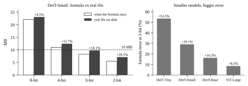
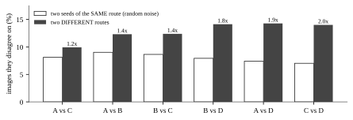
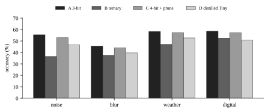

| Problem | P49: Compressing a Vision Transformer to 10 MB [Challenging] |
| Source model | DeiT-Small: 22,050,664 weights (the numbers it learned), 88.2 MB on disk |
| Datasets | ImageNet-1k validation set (50,000 images, 1,000 classes); 14 ImageNet-C corruptions (artificial noise, blur, weather and digital damage) at severity 3 of 5, on 5,000 of those images; about 20% of the ImageNet training set for fine-tuning |
| Scale | 4 compression routes × 3 random seeds = 12 models; a 5-model group-size ablation; a file-size audit of 5 architectures |
| Reproduction target | DeiT-Small 79.8% top-1 (published), reproduced in my pipeline within 0.2 points; DeiT-Tiny 72.2% likewise |
| Deliverable | UCS532 sessional report, CVPR format |
| Duration | 7 weeks (Week 3 to Week 9); checkpoint at Week 6 |
A phone, a drone or a small camera cannot comfortably hold an 88 MB model. P49 asks for a Vision Transformer under 10 MB, which leaves about 3.6 bits per weight instead of 32. There are three standard ways to get there:
Each method has its own papers, and they are usually compared on one number: top-1 accuracy on clean images, at a size worked out with a formula.
The problem with that comparison. Two things are hidden. First, the size: papers compute it as weights × bits ÷ 8, but a real file also stores scales (the numbers that turn rounded codes back into weights) and keeps a few layers at higher precision. For large models this adds only 2–5%, so the formula is fair there. For small models squeezed hard it is not: my real 2-bit DeiT-Small file is 29% bigger than the formula says, and DeiT-Tiny 53% bigger. Second, the behaviour: two models with the same accuracy can get different images wrong, and can react differently to noise or blur. One average hides both.
Earlier work has shown pieces of this. Hooker et al. (2019) found that a compressed model forgets particular images, not random ones. Hendrycks and Dietterich (2019) built ImageNet-C to test robustness to corruptions. Kuzmin et al. (2023) compared pruning with quantisation under equal training effort. What I could not find is different compression methods compared against each other at the same measured size, with how they fail broken down by corruption type.
The central idea of this proposal. Hold the two things a deployment cares about fixed, real bytes on disk and training effort, and change only the compression method. Then ask: do four models of exactly the same size fail on the same images, and does the model that wins on clean images still win on corrupted ones?
O1. Measure real file sizes. Write each compressed model to disk and compare its real size with the formula, across bit-widths and five architectures.
O2. Build a fair race. Compress DeiT-Small four ways to the same real size (about 9.8 MB) and give each the same 3000 steps of fine-tuning (short retraining after compression).
O3. Compare how they fail. Test all four on clean images and on each corruption, image by image, and check whether the clean ranking survives.
O4. Rule out luck. Fine-tune each route with three random seeds, measure how much two seeds of the same route disagree, and count only differences above that.
O5. The P49 Pareto table. Accuracy, size and CPU latency for every route and every compression stage, showing which models no other model beats on every axis at once.
O6. Calibration. When a model says "90% sure", is it right 90% of the time? Check whether the routes differ, and whether a one-number correction (temperature scaling) removes the difference.
O7. Is ternary specially weak, or just weaker? Use five extra 3-bit models of different quality to draw the normal trend between clean and corrupted accuracy, and see whether ternary falls below it.
| Goal | Why it is not already answered |
|---|---|
| O1 | Language-model papers count the extra bytes (SpQR, 2023). The vision papers I read set budgets in average bits per weight, a fair convention for their per-channel scales; none measures where it stops being accurate. |
| O2 | Kuzmin et al. (NeurIPS 2023) compare two methods at a size computed on paper, use unstructured pruning only, and list combined methods as future work. |
| O3 | Robustness studies compare one compressed model with its original and report one average over all corruptions. |
| O4 | Studies of which images a compressed model gets wrong (Hooker et al.) do not measure how much plain seed-to-seed noise produces on its own. |
| O5 | Required by P49. Papers report size and accuracy, rarely CPU latency for the same files. |
| O6–O7 | Calibration and the clean-to-corrupted trend (Miller et al., 2021) are known, but not compared across compression methods at equal size. |
I am not proposing a new compression method. Every route uses published techniques. The novelty is a measurement the field does not usually make, and a design that keeps it fair.
N1. Equal measured bytes. Each route has one setting that is searched until its real file is about 9.77 MB. The four files end up within 0.8% of each other.
N2. Equal effort. Every route gets the same 3000 fine-tuning steps, optimiser and learning rate, following the equal-effort control of Kuzmin et al.
N3. Luck measured, not assumed. Three seeds per route give a "seed floor": how often two runs of the same method disagree by chance. A difference between routes counts only if it beats this floor.
N4. Failures by type, and architecture kept apart. Results are reported per corruption and per corruption family. Three routes keep DeiT-Small's shape; only distillation changes it, so same-shape comparisons are reported separately.
N5. Predictions written down first. Before the main analysis I wrote four predictions into the analysis script, and I report which ones failed.
| Asset | What it is | Role |
|---|---|---|
| ImageNet-1k validation | 50,000 images, 1,000 classes, read in a fixed order from 64 archive shards | Clean accuracy |
| ImageNet-C (made on the fly) | 14 of the 15 standard corruptions at severity 3, applied with fixed random seeds to the first 5,000 validation images | Corruption accuracy |
| ImageNet-1k train, ~20% | 200 archive shards of the training set | Fine-tuning only |
| DeiT-Small, DeiT-Tiny | Pretrained weights from the timm library | Starting points; teacher and student |
| Model | Published | Measured by me | Role in this study |
|---|---|---|---|
| DeiT-Small, 32-bit | 79.8% top-1, 88.2 MB | 79.72%, 88.24 MB | Reproduction target; the baseline |
| DeiT-Tiny, 32-bit | 72.2% top-1 | 72.02%, 22.90 MB | Starting network for route D |
| Mix-QViT, 4-bit DeiT-Small | 11.4 MB (formula) | Rebuilt to within 0.03 MB; a real file built their way is 2–5% larger | Example of a formula size |
| FTerViT, ternary DeiT-Small | 77.47% at 5.81 MB, 260 epochs, 8-bit activations | Not reimplemented | Shows the target is reachable with far longer training |
4-bit alone cannot fit. A real 4-bit DeiT-Small file is 12.42 MB, 24% over the limit, so the 4-bit route must also prune. This was measured before any route was built.
The same 5,000 images appear in all 14 corruptions. They are 5,000 independent samples, not 70,000. Every statistic uses images as the unit; counting 70,000 would inflate certainty by about 3.7 times.
Only one route changes the architecture. Route D uses DeiT-Tiny, so any result involving D may come from the different network rather than the compression. Same-shape results (A, B, C) are always reported on their own.
Each model is saved in my own simple binary format: the rounded codes, one 16-bit scale per group of weights, and any layers kept at higher precision. The size is read from disk with os.path.getsize(), and separately predicted from the layer shapes; the two agree for all 80 audited files.
| Route | What it does | Setting searched | File |
|---|---|---|---|
| A | Every weight stored in 3 bits (8 allowed values) | Group size: weights sharing one scale (36) | 9.718 MB |
| B | Ternary: every weight becomes −1, 0 or +1, five packed per byte | Most sensitive layers kept at 8 bits (15) | 9.785 MB |
| C | 4 bits, plus structured pruning of whole channels | Share of channels pruned (24.4%) | 9.796 MB |
| D | Distil DeiT-Small into DeiT-Tiny, then 8 bits | Layers kept at 16 bits (38) | 9.765 MB |
For each route, a binary search picks a value of its setting, writes the real file, measures it, and halves the range until the file lands just under the target.

3000 steps, batch 256, AdamW optimiser, learning rate 1e-4 with cosine decay, weight decay 0.05, label smoothing 0.1, on about 20% of the ImageNet training set. The model computes with rounded weights but learns as if the rounding were not there (quantisation-aware training), so it adapts to the damage. Route D also learns from the teacher's outputs (distillation, temperature 2). Three seeds per route.
To show what each compression step costs, route A is rebuilt at five group sizes, and route D is measured at each stage. All numbers are measured, seed 0.
| Stage | File | Clean top-1 | Corrupted (mean of 14) |
|---|---|---|---|
| DeiT-Small, 32-bit | 88.24 MB | 79.72 | 62.64 |
| A: 3-bit, group 512 → 256 → 128 → 64 | 8.59 → 9.19 MB | 74.51 → 76.14 | 50.07 → 54.13 |
| A: 3-bit, group 36 (submitted) | 9.72 MB | 76.51 | 54.90 |
| D: DeiT-Tiny, 32-bit | 22.90 MB | 72.02 | 49.86 |
| D: distilled, then 8-bit (submitted) | 9.77 MB | 71.24 | 48.31 |
Routes B and C saved only their final model, so their intermediate stages are a stated gap.
| Metric | Definition | Why |
|---|---|---|
| Clean accuracy | Top-1 on all 50,000 validation images | Comparable with every paper |
| Corruption accuracy | Top-1 on each of the 14 corruptions, 5,000 images each | Shows which damage hurts which route |
| Failure overlap | Share of images where exactly one of two models is right | Do equal-size models fail on the same images? |
| Seed floor | The same overlap between two seeds of one route | How much is luck |
| Calibration (ECE) | Average gap between confidence and accuracy over 15 confidence bins | Is "90% sure" really 90%? |
| File size, CPU latency | Real bytes; median time per image over 50 runs | The two other P49 axes |
Predictions written before the main analysis. (1) Two seeds of the same route disagree on 3–6% of images. (2) The distilled model beats ternary on at least 8 of 14 corruptions, most of all on noise. (3) Within the same architecture, ternary's gap grows on corrupted images. (4) Every route's calibration error equals the plain gap between accuracy and confidence. For O7 the rule is fixed in advance: ternary counts as "below the trend" only if the 95% range of its gap on noise excludes zero.
How they turned out: (1) wrong: the real floor is 6.3–9.6%, and I report it that way; (2) held, 11 of 14; (3) held; (4) held on clean images only, not on corrupted ones.
Every model sees exactly the same images, so models are compared image by image: McNemar's test for right/wrong, and resampling the images 10,000 times (bootstrap) for gaps on corrupted images. When many tests are run, each must pass a stricter bar (Bonferroni correction), stated next to every result. Three seeds are too few for a test across seeds, so for seeds I report the mean, the spread, and whether all three agree. Results are given as ranges, not as "significant".
1. File round trip. Every saved file is read back into a model and written again; all 21 come out byte-identical.
2. Re-score from the files. Every model is reloaded from its file on a different GPU and re-tested; 99.71% of per-image answers match the original run.
3. Two derivations of every size. Each file size is measured on disk and rebuilt by hand from the layer shapes.
4. Seed floor. The disagreement between two seeds of one route is measured, so a route difference can never be mistaken for luck.
Every headline result is also reported (i) by corruption family (noise, blur, weather, digital), (ii) for the three same-shape routes on their own, and (iii) for each seed separately. If seed spread is larger than a route difference, that is the result.
Each phase ends with a gate, a pass/fail check. Most of the experimental work is already done.
All figures are drawn by a script from saved results; none is drawn by hand. Figures 1 and 2 are above.





Still to draw for the report: Figure 8, calibration before and after temperature scaling; Figure 9, the clean-to-corrupted trend for the same-shape models with ternary marked.
| Phase | Weeks | Gate | Status |
|---|---|---|---|
| 0 Size audit | before Week 3 | Formula gap measured | Passed |
| 1 Equal-size routes | before Week 3 | Four files within 0.8% | Passed |
| 2 Evaluation and statistics | before Week 3 | Seed floor and paired tests | Passed |
| 3 Re-check everything | Week 3 | Re-score matches | Passed |
| 4 Report | Weeks 6–9 | One command rebuilds every table | To do |
The cut point. Phases 0–3 already answer O1–O5. If time runs short, the extra figures for O6–O7 are dropped first. Compute: the report needs only a laptop; reproduce.sh rebuilds every statistic and table in about 45 seconds.
| Risk | Response |
|---|---|
| A paper already did this comparison | Cite it, narrow my claim to what it does not cover, and say so. |
| A route difference is smaller than the seed floor | Report it as no real difference. |
| A reviewer says the B/D flip is just the architecture | Agreed in advance: it is stated as a deployment result, and the same-shape results stand on their own. |
| A number in the report cannot be rebuilt | Remove it. Every number must come out of reproduce.sh. |
| Time runs short | Drop Figures 8–9; O1–O5 are complete. |
Limitations stated up front
C1. Real file sizes against the paper formula for five architectures, showing where the formula stops being accurate.
C2. A fair comparison of four compression routes at the same measured size and the same training effort.
C3. Evidence that equal-size models fail differently: routes disagree 1.2–2.0 times more than two seeds of one route, and the clean-image winner loses on corrupted images.
C4. The P49 Pareto table, including the finding that a smaller file is not a faster model: only the distilled route runs faster.
C5. A repository where one command rebuilds every number, with every model file and per-image result included.